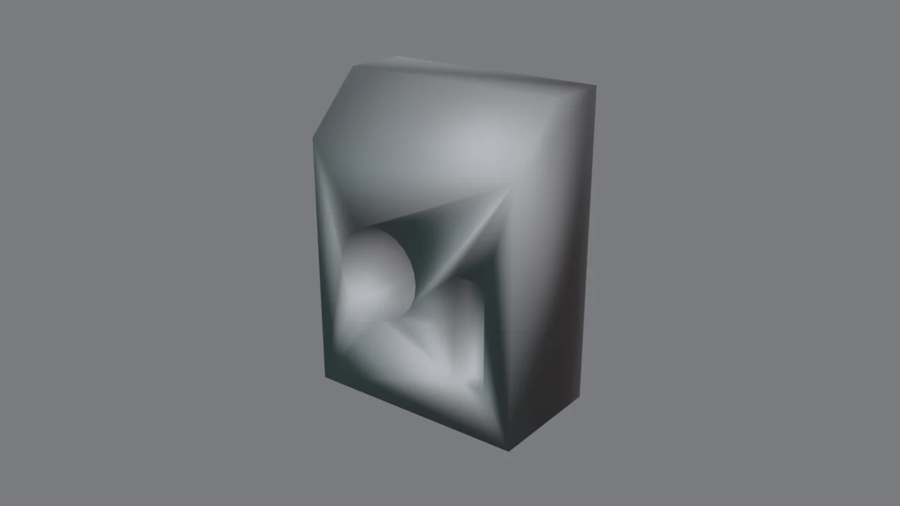
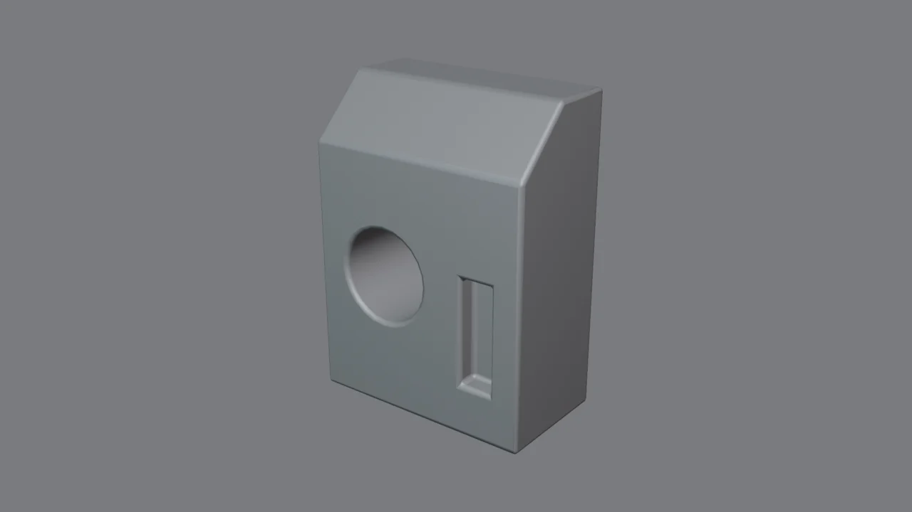
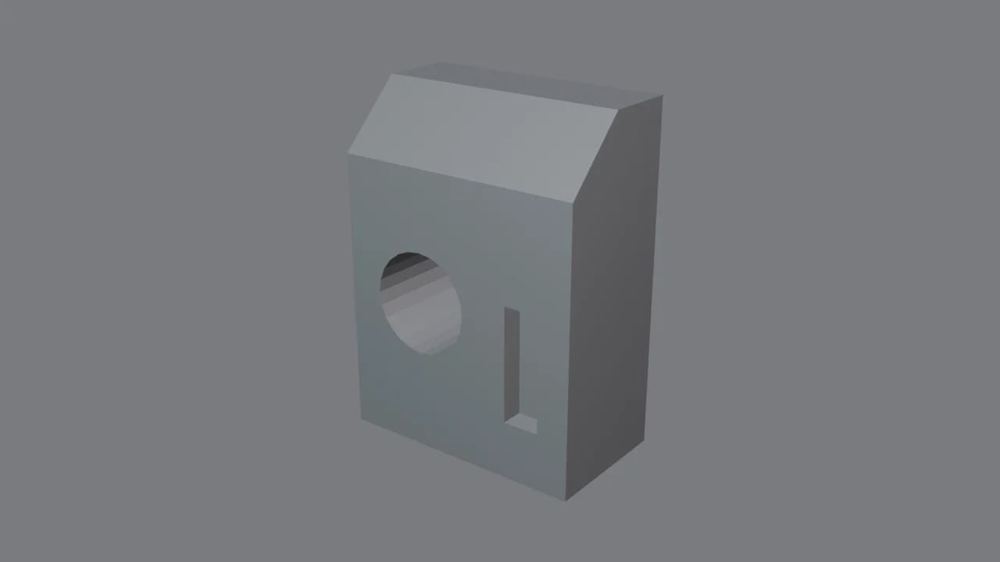
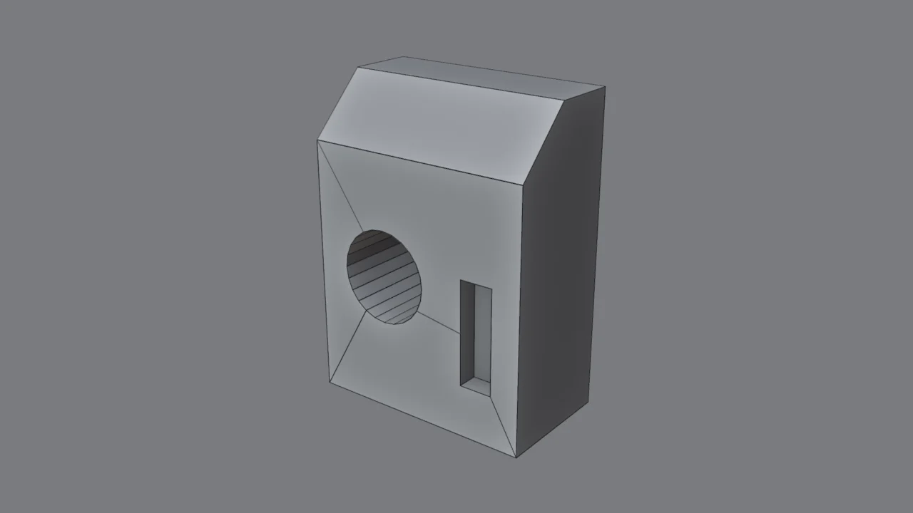
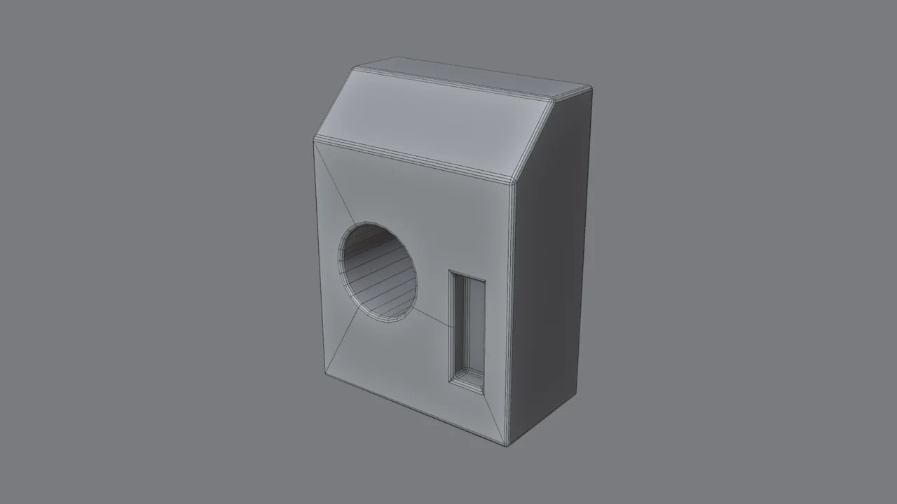
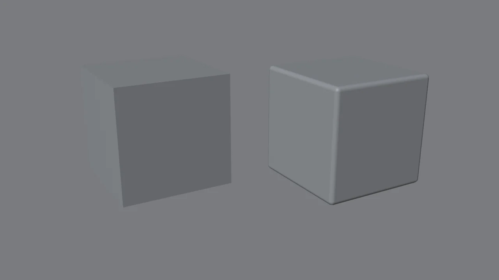
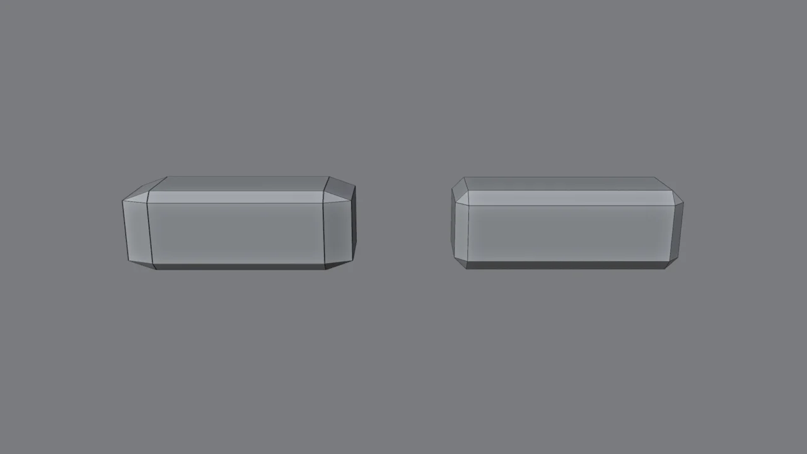

El problema // diagnóstico


Es la misma malla, con los mismos vértices. A la izquierda, alguien pulsó Shade Smooth esperando que quedara «bonito» y salieron manchas y degradados por todas partes. A la derecha, tres ajustes bien hechos. Arrastra el control para compararlas.
Qué son las normales // concepto
Cada cara tiene una normal: una flecha invisible que dice hacia dónde «mira». Blender la usa para calcular cuánta luz recibe la cara.
Shade Flat
Cada cara usa su propia normal. Se ve facetado, pero las caras planas se ven planas.
Shade Smooth
Blender promedia las normales en cada vértice y la luz se difumina entre caras. Ideal para curvas, pero en una cara plana grande ese promedio crea degradados donde no debería haberlos.
La clave: en hard surface queremos dos cosas a la vez: caras planas que se vean planas y curvas y bordes que se vean suaves. Toda la receta de este módulo sirve para conseguir las dos.
Comprueba la orientación: en el menú Overlays activa Face Orientation. Azul significa que la cara mira hacia fuera (bien) y rojo que mira hacia dentro (mal). Si ves rojo: modo edición, A para seleccionar todo y Shift+N para recalcular las normales.
Los 4 sombreados, uno a uno // comparativa

Estas imágenes usan un MatCap, una iluminación de estudio falsa que exagera los defectos. En Blender lo activas con Z → Solid y, en el menú Shading del visor, Lighting: MatCap. Es la mejor forma de cazar manchas mientras modelas.
Compáralos en 3D // visor
Gira el bloque y fíjate cómo se mueven los reflejos. Los defectos de sombreado se ven mucho más en movimiento.
N-gons y booleanos // concepto

Un n-gon es una cara de más de 4 lados. Los booleanos los generan siempre. ¿Son malos? Depende del flujo de trabajo:
| Situación | ¿N-gons? |
|---|---|
| Cara plana + Bevel + Weighted Normal | ✔ Aceptables. Es el flujo «low poly + bevel» que usan muchos profesionales. |
| Superficie curva | ⚠ Evítalos: el sombreado se ondula. |
| Con Subdivision Surface | ✘ Problema seguro: pellizcos y bultos. Lo veremos en el módulo 4. |
| Para animar o deformar | ✘ Mejor quads. |
La receta hard surface // memorízala
Shade Smooth
En modo objeto: clic derecho → Shade Smooth. (Sí, se verá mal durante unos segundos.)
Modificador Bevel
- Amount: pequeño, entre 0.01 y 0.03 en piezas de un metro.
- Segments: 2–3. Con 1 se ve un chaflán, con 3 un borde redondeado.
- Limit Method: Angle (30°): solo bisela las aristas «duras».
- Shading → Harden Normals ✓: la clave. Hace que las caras planas apunten recto aunque estén rodeadas de biseles.
Modificador Weighted Normal
Add Modifier → Normals → Weighted Normal, con Keep Sharp ✓. Da más peso a las caras grandes, así que las caras planas mandan y los bordes pequeños se adaptan. Va siempre debajo del Bevel.


Control fino: si quieres que una arista concreta quede dura (o se bisele) aunque no cumpla el ángulo, selecciónala en modo edición y usa Ctrl+E → Mark Sharp. También puedes cambiar el Limit Method del Bevel a Weight y dar peso solo a las aristas que quieras biselar, desde el panel N → Item → Bevel Weight.
La trampa de la escala // error típico

Cuando escalas en modo objeto, Blender no cambia la malla: guarda un multiplicador. Los modificadores trabajan sobre la malla original y después se estiran. Resultado: biseles ovalados, grosores desiguales y booleanos raros.
Hábito obligatorio: antes de añadir modificadores, Ctrl+A → Scale. Si la escala del panel N no pone 1, 1, 1, todavía no has terminado. Y nunca hagas espejos con escala negativa (S X -1) en modo objeto: invierte las normales. Para eso está el modificador Mirror.
Revisor de Forja // script gratuito
Un script de Python hecho para esta web. Lo ejecutas dentro de Blender, revisa los objetos seleccionados y te dice qué arreglar: escala sin aplicar, escala negativa, modificadores en mal orden, Bevel sin límite, n-gons problemáticos, agujeros, vértices sueltos o duplicados… No modifica nada, solo informa.
- Selecciona tus objetos en modo objeto.
- Ve a la pestaña Scripting (arriba) →
Text → Openy eligerevisor_forja.py. - Pulsa ▶ Run Script. Aparecerá una ventana con el informe.
Reto: el bloque técnico // checklist
Construye tú el bloque de este módulo y arregla su sombreado. Es la primera vez que usarás un booleano:
- Cubo → S para darle proporciones de caja vertical → Ctrl+A Scale.
- Modo edición, aristas: selecciona la arista superior delantera y Ctrl+B con 1 segmento para hacer un chaflán grande.
- Modo objeto: añade un cilindro que atraviese el frontal. Selecciona primero el cilindro y luego, con Shift, el bloque, y pulsa Ctrl+Num − (Bool Tool → Auto Difference). Si no tienes Bool Tool, usa el modificador Boolean → Difference en el bloque, elige el cilindro y aplícalo.
- Haz lo mismo con un cubo estrecho para la ranura.
- Prueba los 4 sombreados y quédate con la receta.